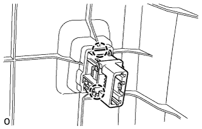

FUEL LID OPENER SWITCH > REMOVAL |
| 1. DISCONNECT CABLE FROM NEGATIVE BATTERY TERMINAL |
| Condition | Waiting Time |
| Vehicle enrolled in G-BOOK system | 6 minutes |
| Vehicle not enrolled in G-BOOK system | 1 minute |
| 2. REMOVE DOOR SCUFF PLATE ASSEMBLY LH |
 |
Put protective tape around the door scuff plate.
| *1 | Protective Tape |
Using a screwdriver, detach the 4 clips, 10 claws and 2 guides.
Disconnect the connector and remove the door scuff plate.
| 3. REMOVE COWL SIDE TRIM BOARD LH |
 |
Remove the clip.
Detach the clip and claw and remove the cowl side trim board.
| 4. REMOVE NO. 1 INSTRUMENT PANEL UNDER COVER SUB-ASSEMBLY |
 |
Remove the screw.
Detach the 2 clips and 2 guides.
Disconnect the connector, detach the clamp and remove the No. 1 instrument panel under cover.
| 5. REMOVE INSTRUMENT PANEL FINISH PANEL END LH |
 |
Detach the 11 clips and remove the instrument panel finish panel end.
| 6. REMOVE LOWER INSTRUMENT PANEL FINISH PANEL SUB-ASSEMBLY |
 |
Detach the 4 clips.
Disconnect each connector and cooler thermistor and remove the instrument panel finish panel.
| 7. REMOVE FUEL LID OPENER SWITCH |
|  |
Detach the 2 claws and remove the fuel lid opener switch.